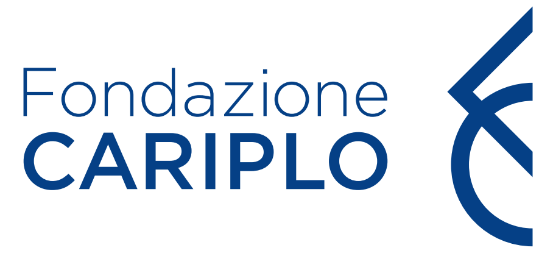
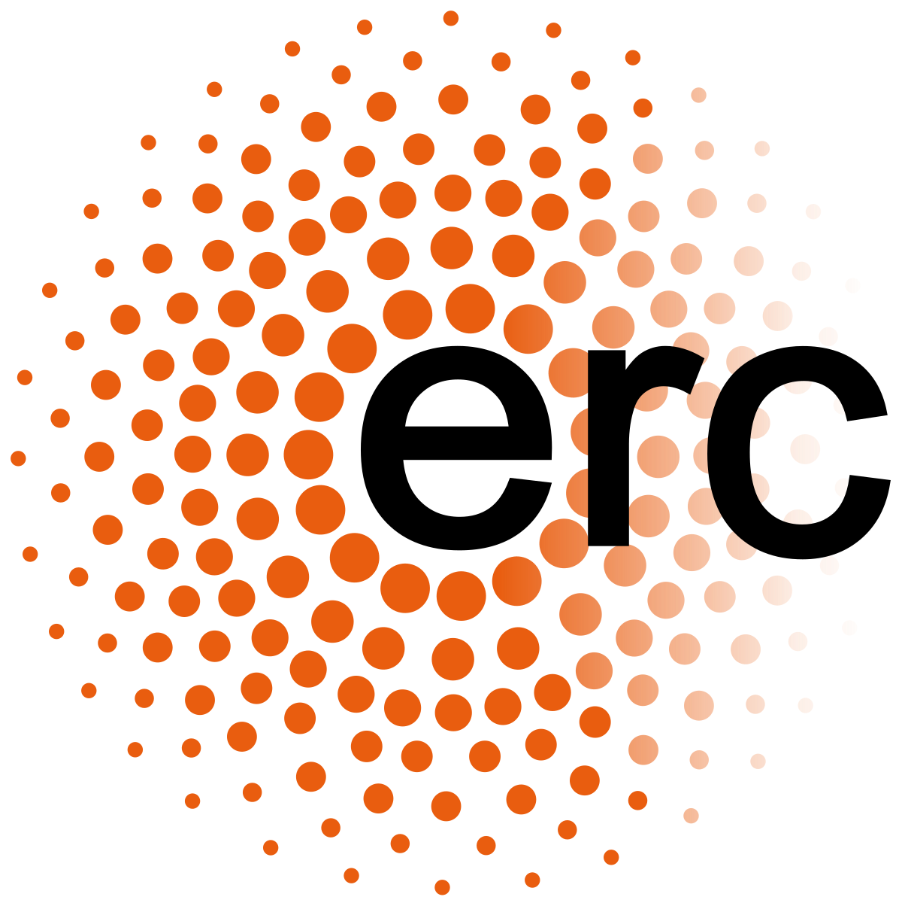

The CIFRA institute is the place to be
at Bocconi University in Milan Italy
if you ain't been there already you come and see
if your security is too sustained
the people at CIFRA will make it fine-grained
cryptographers and physicists rule the day
when you're lost they'll show you the way
Rosen Malavolta Bogdanov Orsini
Pondering crypto and then having Martini
Zecchina Mezard Trevisan and Parisi
I would have done it if it was so easy


Members
Alon Rosen (Director)
Alon is interested in the foundations of cryptography. Recently, he has been looking into connections of public-key cryptography with fine-grained complexity and statistical inference.
Giulio Malavolta (Associate Director)
Giulio's research focuses on mathematical aspects of asymmetric cryptography and in the intersection with quantum computing. He is primarily interested in constructing new cryptographic schemes from well-founded computational assumptions.
Emmanuela Orsini (Associate Director)
Emmanuela's main research area is cryptography, with a focus on secure multiparty computation and zero-knowledge constructions. Her aim is to design efficient general-purpose protocols as well as specific solutions for privacy-preserving applications. Her interests extend to post-quantum cryptography, algebraic coding theory, and computational algebra.
Luca Trevisan
Luca's research is in theoretical computer science, with a focus on computational complexity, on the analysis of algorithms, on the foundations of cryptography, and on topics at the intersection of theoretical computer science and pure mathematics.
Andrej Bogdanov
Andrej is interested in pseudorandomness, the foundations of cryptography, and the complexity of cryptographic constructions.
Postdoctoral Fellows
Pedro Branco
Pedro is interested in all aspects of public-key cryptography, with a special focus on secure two-party computation.
Tamer Mour
Tamer has just completed his graduate studies in the field of cryptography, specifically in computational proof systems. Despite cryptography being his main focus so far, Tamer is generally interested in modelling and solving problems that arise in societal interactions, using theoretical computer science and math.
Nikolaj I. Schwartzbach
Nikolaj works with analyzing incentives for Web3 / blockchain-based systems, with the goal of designing solutions that are not profitable to attack. More broadly, he is interested in subsets of cryptography, game theory, and computational complexity.
Graduate Fellows
Caicai Chen
PhD, Bocconi University, Sep 2022 -
Daji Landis
MSc, Bocconi University, Sep 2022 - Sep 2023
Wei Qi
PhD, Bocconi University, Sep 2023 -
Graduate Interns
- Miguel Cueto Noval (ISTA), Oct 2021 - Dec 2021
- Charlotte Hoffman (ISTA), Oct 2021 - Dec 2021
- Nikolaj I. Schwartzbach (Aarhus), Feb 2022 - Jun 2022
- Dan Mitropolsky (Columbia), May 2022 - Jul 2022
- Romain Bourneuf (ENS Lyon), May 2022 - Jul 2022
- Zhiye Xie (NYU Shanghai), Mar 2023 - Jun 2023
- Ruta Jawale (UIUC), Jan 2024 - Jul 2024
Visitors
- Andrej Bogdanov (CUHK), Dec 2021
- Silas Richelson (UC Riverside), Nov 2021- Dec 2021
- Pavel Hubáček (Charles University), Jan 2022 - Jun 2022
- Moni Naor (Weizmann Institute), Mar 2022
- Miguel Cueto Noval (ISTA), Mar 2022
- Charlotte Hoffman (ISTA), Mar 2022
- Devika Sharma (Reichman University), Mar 2022
- Prashant Vasudevan (NUS), Apr 2022
- Lukáš Folwarczný (Charles University), May 2022
- Andrej Bogdanov (CUHK), Jun 2022
- Leo Reyzin (BU), Jun 2022
- Yevgeniy Dodis (NYU), Jun 2022
- Prahladh Harsha (TIFR), Jul 2022
- Siyao Guo (NYU Shanghai), Mar 2023 - Jun 2023
- Akshima (NYU Shanghai), Mar 2023 - Jun 2023
- Andrej Bogdanov (Ottawa), Jun 2023
- Yuval Ishai (Technion), Jun 2023
- Salil Vadhan (Harvard), Sep 2023
- Nir Bitansky (TAU), Oct 2023
- Kobbi Nissim (Georgetown), 2024
- Salil Vadhan (Harvard), Apr 2024 - Jun 2024
2023
- Mariana Gama, Emad Heydari Beni, Emmanuela Orsini, Nigel P. Smart, and Oliver Zajonc. MPC With Delayed Parties Over Star-Like Networks. In ASIACRYPT 2023. Pdf
- Andrej Bogdanov, Pravesh Kothari, and Alon Rosen. Public-Key Encryption, Local Pseudorandom Generators, and the Low-Degree Method. In TCC 2023. Pdf
- Daji Landis, and Nikolaj I. Schwartzbach. Stackelberg Attacks on Auctions and Blockchain Transaction Fee Mechanisms. In ECAI 2023. Pdf
- Andrej Bogdanov, and Alon Rosen. Nondeterministic Interactive Refutations for Nearest Boolean Vector. In ICALP 2023. Pdf
- Carsten Baum, Lennart Braun, Cyprien Delpech de Saint Guilhem, Michael Klooß, Emmanuela Orsini, Lawrence Roy, and Peter Scholl. Publicly Verifiable Zero-Knowledge and Post-Quantum Signatures From VOLE-in-the-Head. In CRYPTO 2023. Pdf
- Prahladh Harsha, Daniel Mitropolsky, and Alon Rosen. Downward Self-Reducibility in TFNP. In ITCS 2023. Pdf
- Romain Bourneuf, Lukáš Folwarczný, Pavel Hubáček, Alon Rosen, and Nikolaj Schwartzbach . PPP-Completeness and Extremal Combinatorics. In ITCS 2023. Pdf
2022
- Nikolaj I. Schwartzbach. Payment Schemes from Limited Information with Applications in Distributed Computing. In EC 2022. Pdf
- Andrej Bogdanov, Miguel Cueto Noval. Charlotte Hoffman, and Alon Rosen. Public-Key Encryption from Homogeneous CLWE. In TCC 2022. Invited to JofC special issue of selected papers from TCC 2022. Pdf
Workshops
- Giornata Teorica, Dec 2021
- Milan Theory Workshop, Jun 2022
- Theory Day, Jan 2023
Conferences
- TCC 2024, Nov 2024